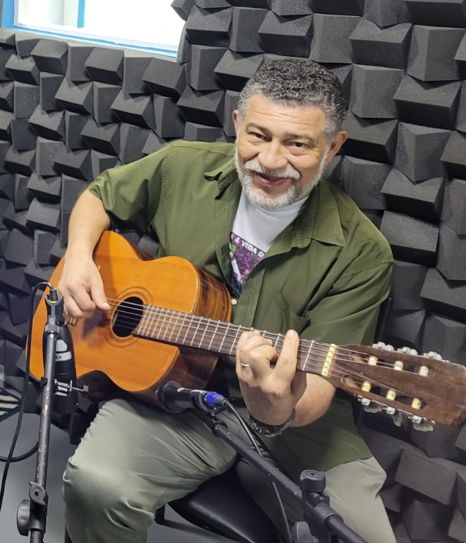
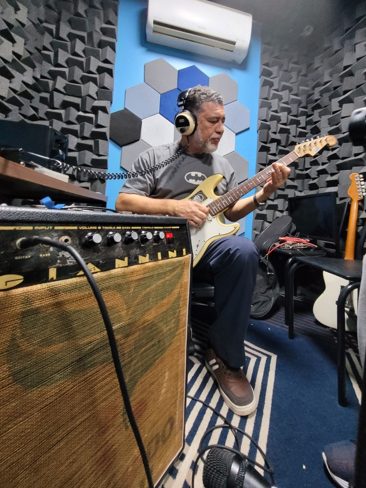
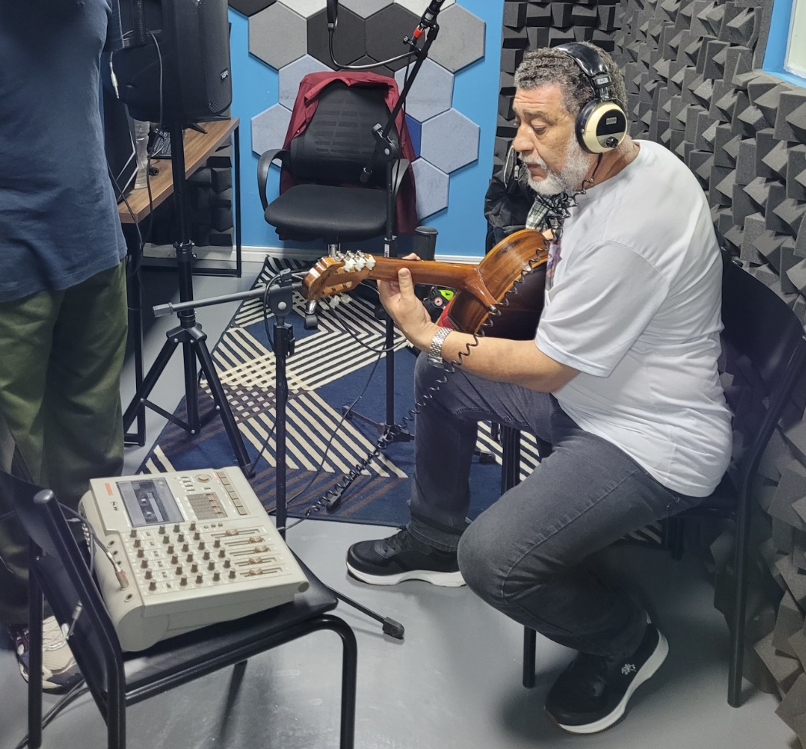
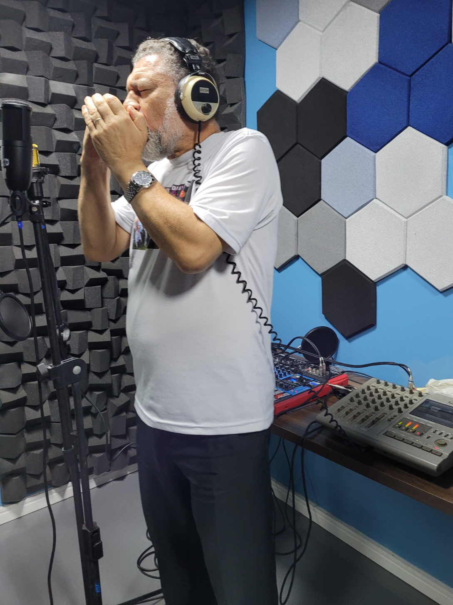
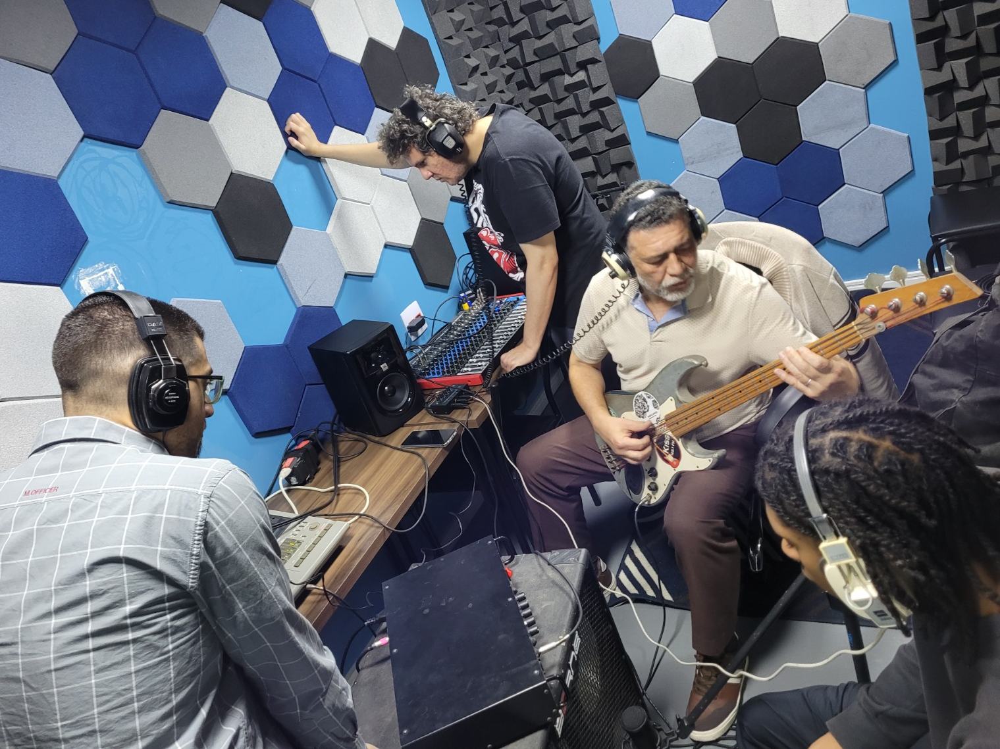
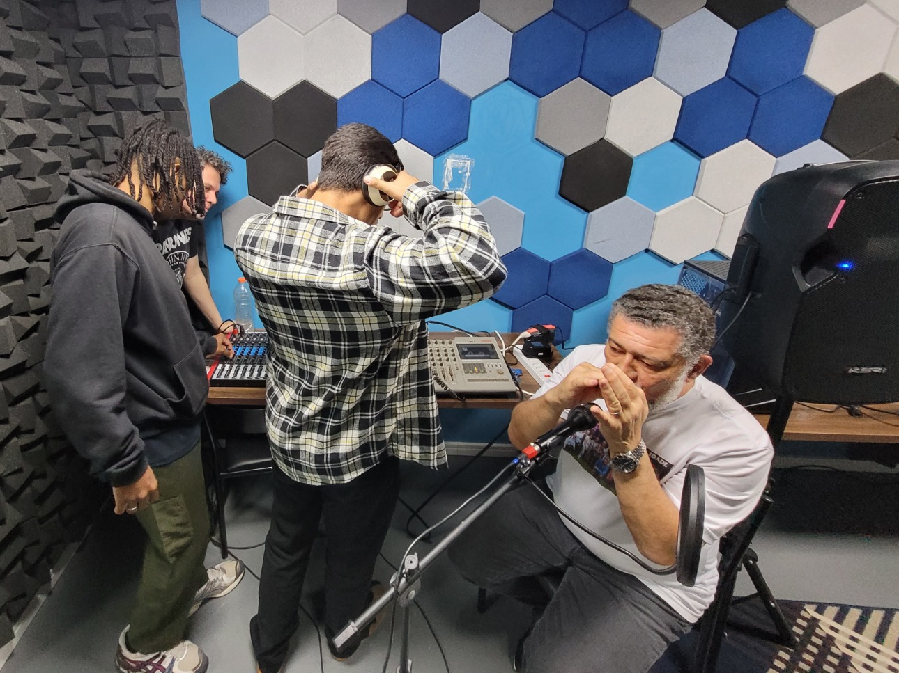
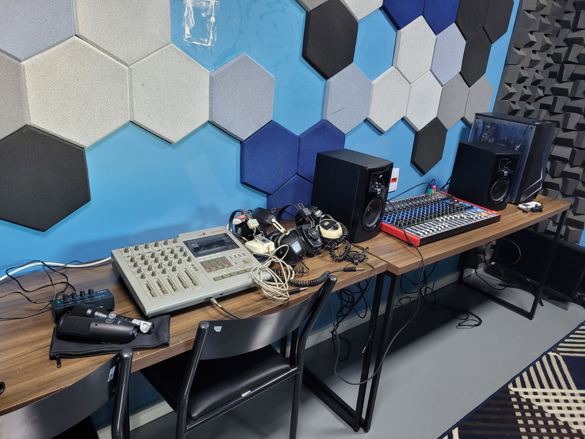

A poesia de Clóvis Ribeiro
O novo single "Todos os Meses", do cantor e compositor Clóvis Ribeiro, celebra a entrega artística e a maturidade técnica da turma de Sonoplastia da Rede Daora. Uma produção fonográfica única que une a sensibilidade musical do artista com a precisão dos alunos na captação, mixagem e masterização em estúdio.


Clovis Ribeiro traz a voz, a poesia e a bagagem de quem vive a música.
Cantor, compositor, radialista, escritor, jornalista e diretor musical do Grupo Cultura e Vida na Terceira Idade na Casa de Cultura do Butantã, ele traz uma sensibilidade única que acolhe a técnica.
A música atravessa a estética do estúdio com personalidade própria: íntima na interpretação, ampla na produção e precisa na finalização. É um release que traduz maturidade sonora e cuidado editorial em cada detalhe.
Quem fez o som acontecer.
Estudantes do curso de sonoplastia que atuaram de forma conjunta em todas as etapas de gravação, mixagem e masterização do single, sob a condução e orientação do arte-educador Jhonny Magi. Aqui, as trajetórias individuais se somam em uma entrega técnica coletiva.

Akin Labi Mendes
28 anos — DJ e Produtor Musical (AK1N)
Curador musical e cultural, produtor de eventos e festas, técnico de som e estudando sonoplastia.

Albert Jonnes Carrer
34 anos — Músico e Compositor
Músico, compositor e sonoplasta. Já tocou em várias bandas e eventos por São Paulo e Brasil.

Walmor Carvalho
Jornalista e Fotógrafo
Jornalista e fotógrafo com formação também em produção audiovisual. Além de dedicar parte da carreira acompanhando música e cultura agora se dedica a aprender os detalhes técnicos da produção musical.
Registro Visual das Sessões
Instantes capturados durante as sessões de ensaio, captação de voz e instrumentação no estúdio de gravação com Clovis Ribeiro.






Créditos e Infraestrutura Técnica
Instrumentos e Músicos
Vocais
Vocal Principal: Clóvis Ribeiro; Vocais de Apoio: Clóvis Ribeiro, Albert Jonnes
Violões
Músico: Clóvis Ribeiro — Di Giorgio Vintage
Guitarra
Músico: Clóvis Ribeiro — Stratocaster Custom
Amplificação: Giannini U 75G 1974
Efeito: Trêmolo Analógico Giannini 70's
Baixo
Músico: Clóvis Ribeiro — Custom (Corpo Jennifer / Braço Giannini)
Percussão
Bongô: Clóvis Ribeiro; Chocalho: Albert Jonnes
Equipamento & Produção
Produção Técnica
Gravação, Mix e Master: Akin Labi Mendes, Albert Jonnes Carrer e Walmor Carvalho
Arte-Educador: Jhonny Magi
Gravadores de Fita
Tascam 424 (Anos 90), CCE 3 Head (Anos 80)
Microfones
Shure SH 55, AKG P 120, AKG P 3S, Leson SM58
Mixer
Soundvoice MS16EUX